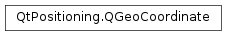

QGeoCoordinate¶
Synopsis¶
Functions¶
- def
__eq__(other) - def
__ne__(other) - def
altitude() - def
atDistanceAndAzimuth(distance, azimuth[, distanceUp=0.0]) - def
azimuthTo(other) - def
distanceTo(other) - def
isValid() - def
latitude() - def
longitude() - def
setAltitude(altitude) - def
setLatitude(latitude) - def
setLongitude(longitude) - def
toString([format=DegreesMinutesSecondsWithHemisphere]) - def
type()
Detailed Description¶
The
PySide2.QtPositioning.QGeoCoordinateclass defines a geographical position on the surface of the Earth.A
PySide2.QtPositioning.QGeoCoordinateis defined by latitude, longitude, and optionally, altitude.Use
PySide2.QtPositioning.QGeoCoordinate.type()to determine whether a coordinate is a 2D coordinate (has latitude and longitude only) or 3D coordinate (has latitude, longitude and altitude). UsePySide2.QtPositioning.QGeoCoordinate.distanceTo()andPySide2.QtPositioning.QGeoCoordinate.azimuthTo()to calculate the distance and bearing between coordinates.The coordinate values should be specified using the WGS84 datum. For more information on geographical terms see this article on coordinates and another on geodetic systems including WGS84.
Azimuth in this context is equivalent to a compass bearing based on true north.
This class is a
Q_GADGET()since Qt 5.5. It can be directly used from C++ and QML .
-
class
PySide2.QtPositioning.QGeoCoordinate¶ -
class
PySide2.QtPositioning.QGeoCoordinate(other) -
class
PySide2.QtPositioning.QGeoCoordinate(latitude, longitude) -
class
PySide2.QtPositioning.QGeoCoordinate(latitude, longitude, altitude) Parameters: - other –
PySide2.QtPositioning.QGeoCoordinate - longitude –
PySide2.QtCore.double - latitude –
PySide2.QtCore.double - altitude –
PySide2.QtCore.double
Constructs a coordinate. The coordinate will be invalid until
PySide2.QtPositioning.QGeoCoordinate.setLatitude()andPySide2.QtPositioning.QGeoCoordinate.setLongitude()have been called.Constructs a coordinate from the contents of
other.Constructs a coordinate with the given
latitudeandlongitude.If the latitude is not between -90 to 90 inclusive, or the longitude is not between -180 to 180 inclusive, none of the values are set and the
PySide2.QtPositioning.QGeoCoordinate.type()will beQGeoCoordinate.InvalidCoordinate.Constructs a coordinate with the given
latitude,longitudeandaltitude.If the latitude is not between -90 to 90 inclusive, or the longitude is not between -180 to 180 inclusive, none of the values are set and the
PySide2.QtPositioning.QGeoCoordinate.type()will beQGeoCoordinate.InvalidCoordinate.Note that
altitudespecifies the meters above sea level.- other –
-
PySide2.QtPositioning.QGeoCoordinate.CoordinateType¶ Defines the types of a coordinate.
Constant Description QGeoCoordinate.InvalidCoordinate An invalid coordinate. A coordinate is invalid if its latitude or longitude values are invalid. QGeoCoordinate.Coordinate2D A coordinate with valid latitude and longitude values. QGeoCoordinate.Coordinate3D A coordinate with valid latitude and longitude values, and also an altitude value.
-
PySide2.QtPositioning.QGeoCoordinate.CoordinateFormat¶ Defines the possible formatting options for
PySide2.QtPositioning.QGeoCoordinate.toString().Constant Description QGeoCoordinate.Degrees Returns a string representation of the coordinates in decimal degrees format. QGeoCoordinate.DegreesWithHemisphere Returns a string representation of the coordinates in decimal degrees format, using ‘N’, ‘S’, ‘E’ or ‘W’ to indicate the hemispheres of the coordinates. QGeoCoordinate.DegreesMinutes Returns a string representation of the coordinates in degrees-minutes format. QGeoCoordinate.DegreesMinutesWithHemisphere Returns a string representation of the coordinates in degrees-minutes format, using ‘N’, ‘S’, ‘E’ or ‘W’ to indicate the hemispheres of the coordinates. QGeoCoordinate.DegreesMinutesSeconds Returns a string representation of the coordinates in degrees-minutes-seconds format. QGeoCoordinate.DegreesMinutesSecondsWithHemisphere Returns a string representation of the coordinates in degrees-minutes-seconds format, using ‘N’, ‘S’, ‘E’ or ‘W’ to indicate the hemispheres of the coordinates.
-
PySide2.QtPositioning.QGeoCoordinate.altitude()¶ Return type: PySide2.QtCore.doubleReturns the altitude (meters above sea level).
The return value is undefined if the altitude has not been set.
-
PySide2.QtPositioning.QGeoCoordinate.atDistanceAndAzimuth(distance, azimuth[, distanceUp=0.0])¶ Parameters: - distance –
PySide2.QtCore.qreal - azimuth –
PySide2.QtCore.qreal - distanceUp –
PySide2.QtCore.qreal
Return type: Returns the coordinate that is reached by traveling
distancemeters from the current coordinate atazimuth(or bearing) along a great-circle. There is an assumption that the Earth is spherical for the purpose of this calculation.The altitude will have
distanceUpadded to it.Returns an invalid coordinate if this coordinate is invalid.
- distance –
-
PySide2.QtPositioning.QGeoCoordinate.azimuthTo(other)¶ Parameters: other – PySide2.QtPositioning.QGeoCoordinateReturn type: PySide2.QtCore.qrealReturns the azimuth (or bearing) in degrees from this coordinate to the coordinate specified by
other. Altitude is not used in the calculation.The bearing returned is the bearing from the origin to
otheralong the great-circle between the two coordinates. There is an assumption that the Earth is spherical for the purpose of this calculation.Returns 0 if the type of this coordinate or the type of
otherisQGeoCoordinate.InvalidCoordinate.
-
PySide2.QtPositioning.QGeoCoordinate.distanceTo(other)¶ Parameters: other – PySide2.QtPositioning.QGeoCoordinateReturn type: PySide2.QtCore.qrealReturns the distance (in meters) from this coordinate to the coordinate specified by
other. Altitude is not used in the calculation.This calculation returns the great-circle distance between the two coordinates, with an assumption that the Earth is spherical for the purpose of this calculation.
Returns 0 if the type of this coordinate or the type of
otherisQGeoCoordinate.InvalidCoordinate.
-
PySide2.QtPositioning.QGeoCoordinate.isValid()¶ Return type: PySide2.QtCore.boolReturns
trueif the longitude and latitude are valid.
-
PySide2.QtPositioning.QGeoCoordinate.latitude()¶ Return type: PySide2.QtCore.doubleReturns the latitude, in decimal degrees. The return value is undefined if the latitude has not been set.
A positive latitude indicates the Northern Hemisphere, and a negative latitude indicates the Southern Hemisphere.
-
PySide2.QtPositioning.QGeoCoordinate.longitude()¶ Return type: PySide2.QtCore.doubleReturns the longitude, in decimal degrees. The return value is undefined if the longitude has not been set.
A positive longitude indicates the Eastern Hemisphere, and a negative longitude indicates the Western Hemisphere.
-
PySide2.QtPositioning.QGeoCoordinate.__ne__(other)¶ Parameters: other – PySide2.QtPositioning.QGeoCoordinateReturn type: PySide2.QtCore.bool
-
PySide2.QtPositioning.QGeoCoordinate.__eq__(other)¶ Parameters: other – PySide2.QtPositioning.QGeoCoordinateReturn type: PySide2.QtCore.boolReturns true if the latitude, longitude and altitude of this coordinate are the same as those of
other.The longitude will be ignored if the latitude is +/- 90 degrees.
-
PySide2.QtPositioning.QGeoCoordinate.setAltitude(altitude)¶ Parameters: altitude – PySide2.QtCore.doubleSets the altitude (meters above sea level) to
altitude.
-
PySide2.QtPositioning.QGeoCoordinate.setLatitude(latitude)¶ Parameters: latitude – PySide2.QtCore.doubleSets the latitude (in decimal degrees) to
latitude. The value should be in the WGS84 datum.To be valid, the latitude must be between -90 to 90 inclusive.
-
PySide2.QtPositioning.QGeoCoordinate.setLongitude(longitude)¶ Parameters: longitude – PySide2.QtCore.doubleSets the longitude (in decimal degrees) to
longitude. The value should be in the WGS84 datum.To be valid, the longitude must be between -180 to 180 inclusive.
-
PySide2.QtPositioning.QGeoCoordinate.toString([format=DegreesMinutesSecondsWithHemisphere])¶ Parameters: format – PySide2.QtPositioning.QGeoCoordinate.CoordinateFormatReturn type: unicode Returns this coordinate as a string in the specified
format.For example, if this coordinate has a latitude of -27.46758, a longitude of 153.027892 and an altitude of 28.1, these are the strings returned depending on
format:formatvalueReturned string Degrees-27.46758°, 153.02789°, 28.1m DegreesWithHemisphere27.46758° S, 153.02789° E, 28.1m DegreesMinutes-27° 28.054’, 153° 1.673’, 28.1m DegreesMinutesWithHemisphere27° 28.054 S’, 153° 1.673’ E, 28.1m DegreesMinutesSeconds-27° 28’ 3.2”, 153° 1’ 40.4”, 28.1m DegreesMinutesSecondsWithHemisphere27° 28’ 3.2” S, 153° 1’ 40.4” E, 28.1m The altitude field is omitted if no altitude is set.
If the coordinate is invalid, an empty string is returned.
-
PySide2.QtPositioning.QGeoCoordinate.type()¶ Return type: PySide2.QtPositioning.QGeoCoordinate.CoordinateTypeReturns the type of this coordinate.
© 2018 The Qt Company Ltd. Documentation contributions included herein are the copyrights of their respective owners. The documentation provided herein is licensed under the terms of the GNU Free Documentation License version 1.3 as published by the Free Software Foundation. Qt and respective logos are trademarks of The Qt Company Ltd. in Finland and/or other countries worldwide. All other trademarks are property of their respective owners.